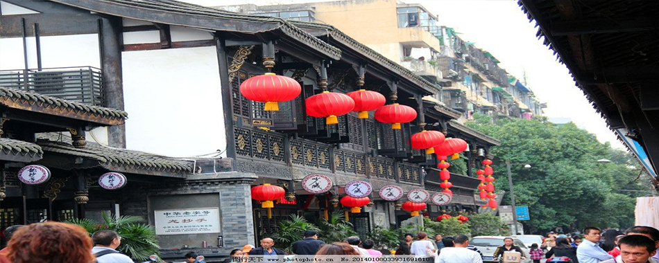
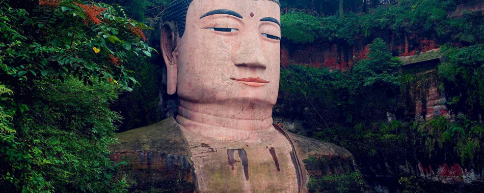

- 
- 
成都武侯祠，位于四川省成都市南门武侯祠大街，是中国惟一的君臣合祀祠庙，由武侯祠、汉昭烈庙及惠陵组成，人们习惯将三者统称为武侯祠。成都武侯祠始建于公元223年修建惠陵（刘备的陵寝）之时，其中，武侯祠（诸葛亮的专祠）建于唐以前，初与祭祀刘备（汉昭烈帝）的汉昭烈庙相邻，明朝初年重建时将武侯祠并入，形成了君臣合祀，祠堂与陵园合一的格局。除惠陵以外现存祠庙主体建筑为1672年清康熙年间复建。1961年成都武侯祠被国务院公布为第一批全国重点文物保护单位。1984年成立博物馆，2008年被评为首批国家一级博物馆，享有“三国圣地”之美誉。 成都武侯祠博物馆现分为三国历史遗迹区（文物区）、西区（三国文化体验区）、锦里民俗区（锦里）三大板块,面积15万平方米。2006年武侯祠被评为国家AAAA级旅游景区，是全世界影响最大的三国遗迹博物馆。